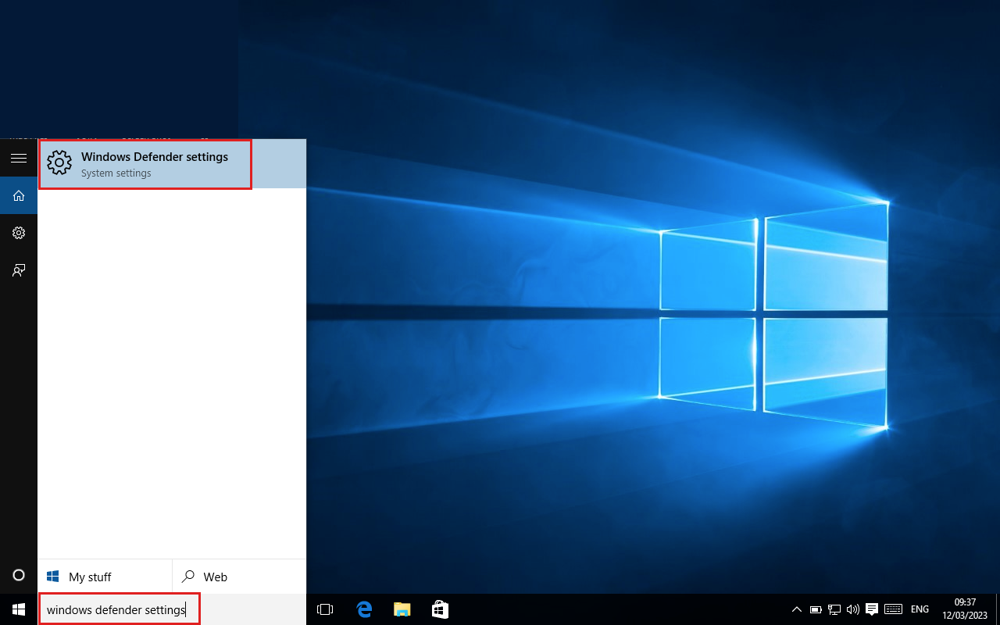
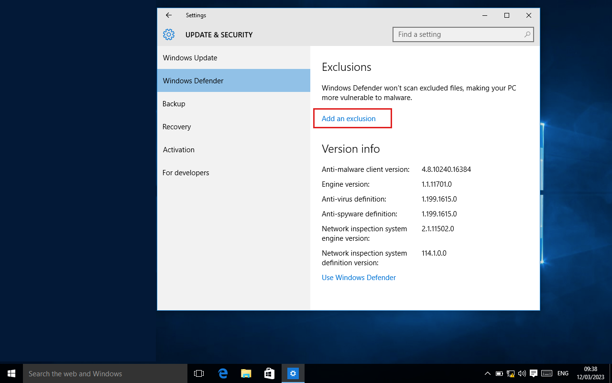
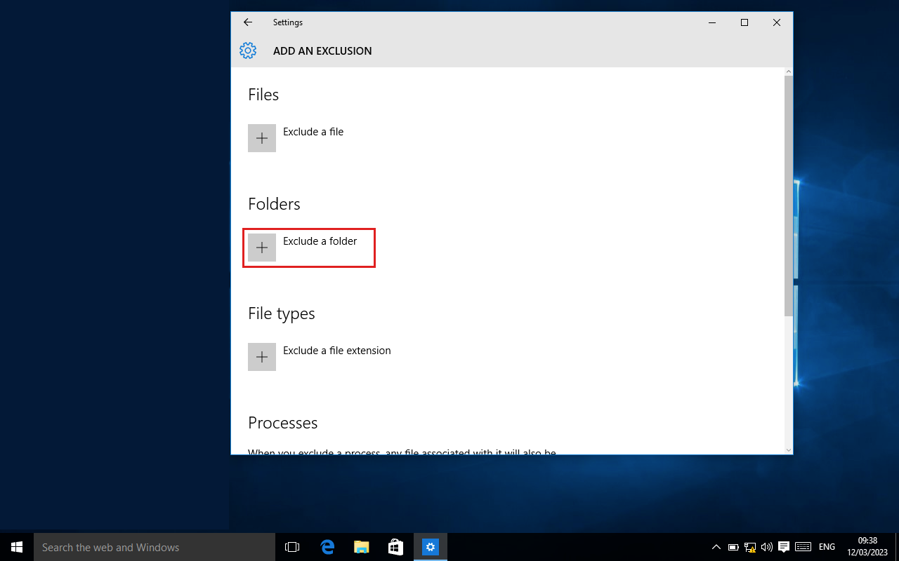
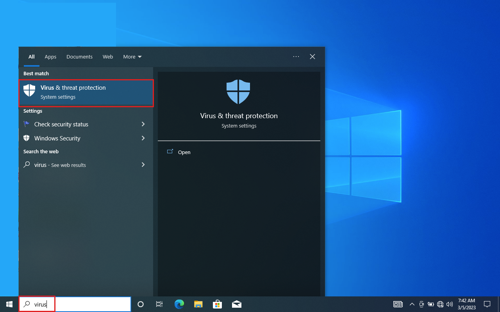
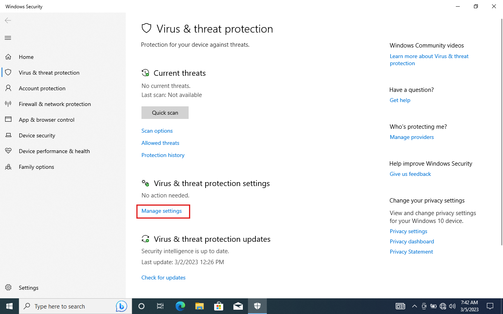
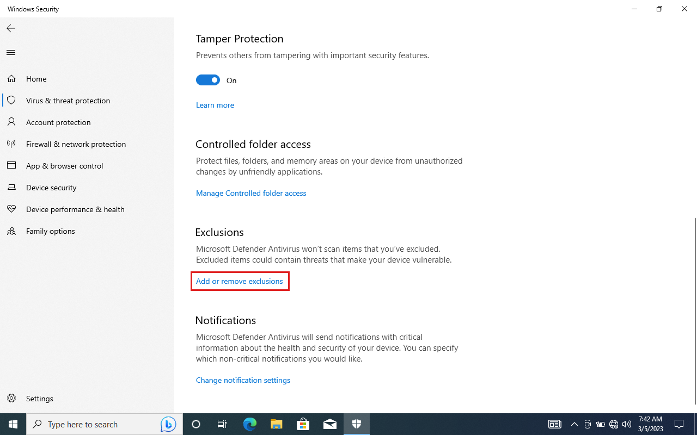
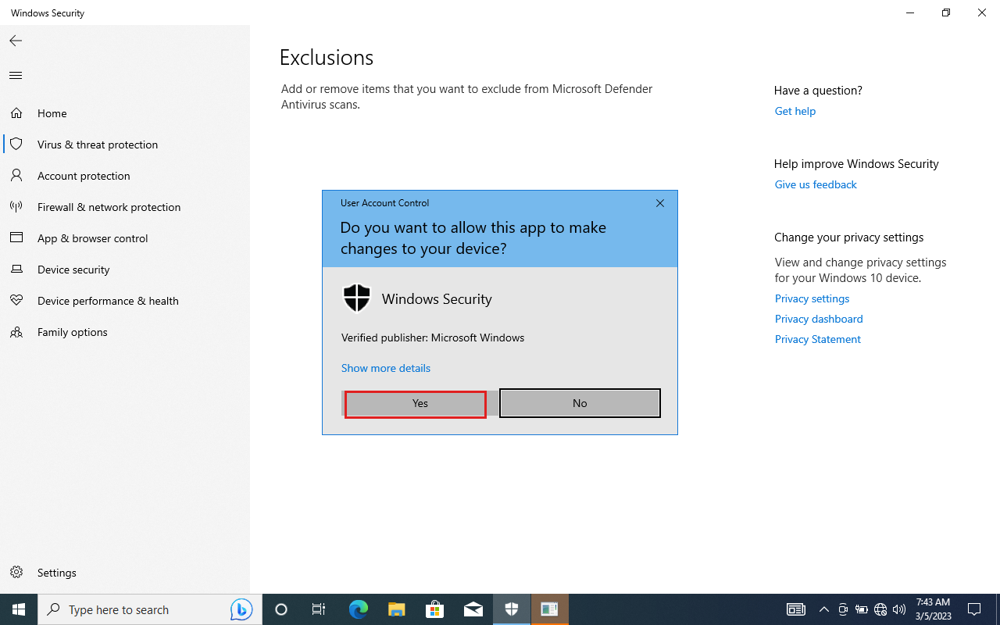
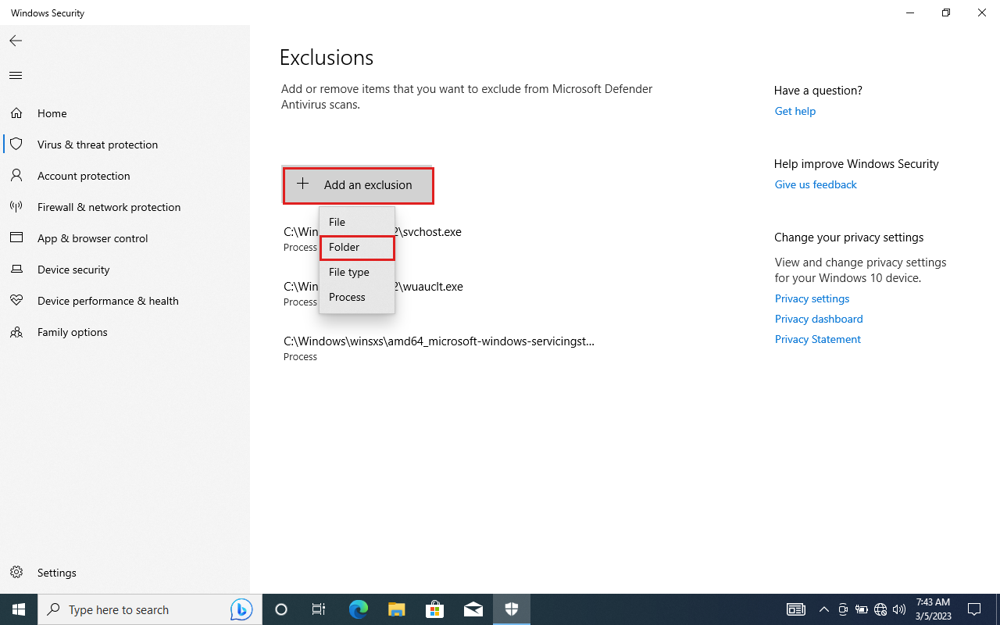

Menambahkan folder ke exclution
Secara default, Windows 10 telah dilengkapi dengan antivirus besutan Microsoft yang otomatis aktif memproteksi komputer. Akan tetapi biasanya akan salah dalam memberikan deteksi, menganggap software OtomaX sebagai virus atau ancaman berakibat software OtomaX tidak dapat dijalankan atau bahkan dihapus oleh si antivirus tersebut.
Oleh karena hal diatas, perlu membuat folder bernama OtomaX untuk menampung file software OtomaX dan kemudian memasukkan folder tersebut ke dalam Exclution antivirus sebagai berikut:
Windows 10 versi lama
- Pastikan telah membuat folder OtomaX klik disini, serta meletakkan file software OtomaX di folder tersebut.
-
Pada Windows, klik menu Search Bar -> ketik: windows defender settings, dan pilih.

-
Klik Add an exclusion.

-
Klik tombol Exclude a folder -> cari folder bernama OtomaX, pilih
dan kemudian klik tombol Exclude this folder.

- Selesai.
Dengan diatur seperti diatas, software OtomaX dan antivirus bawaan windows dapat berjalan beriringan.
Windows 10 versi baru
- Pastikan telah membuat folder OtomaX klik disini, serta meletakkan file software OtomaX di folder tersebut.
-
Pada Windows, klik menu Search Bar -> ketik: virus, dan klik Virus & threat protection.

-
Klik Manage settings

-
Klik Add or remove exclutions

-
Klik tombol Yes

-
Klik tombol Add an exclution -> klik Folder -> cari folder bernama OtomaX, pilih
dan kemudian klik tombol Select Folder.

- Selesai.
Dengan diatur seperti diatas, software OtomaX dan antivirus bawaan windows dapat berjalan beriringan.